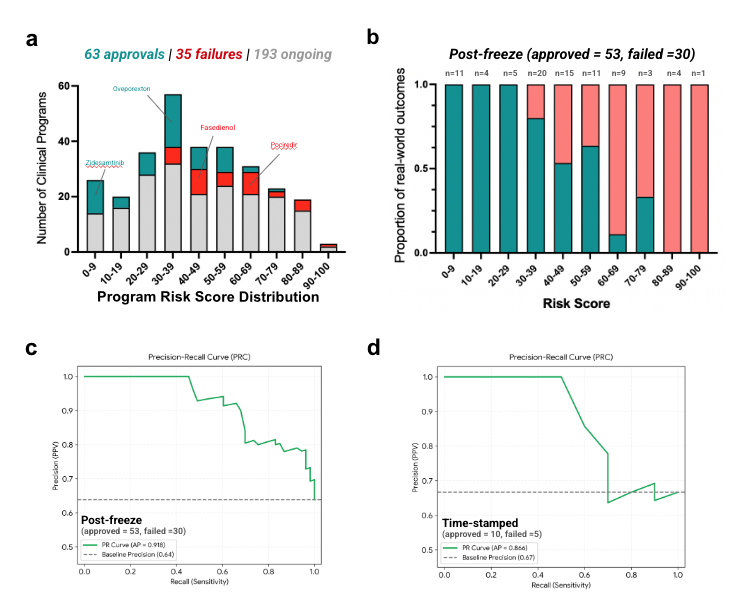

The Predictions We Made Before the Answers Existed
Post 9 of 9 on SAISHO’s clinical-outcomes prediction model.
Every number in this series so far shares a weakness, and it is the weakness that makes most retrospective ML in drug discovery unconvincing.
The outcomes already happened. They are in the public record. They are, almost certainly, somewhere in the pretraining corpus of the models underneath our agents.
We imposed leakage controls: no outcome labels, no compound names or development codes or brand aliases or registry identifiers in the inputs, web search disabled, chemical-similarity search against known clinical programs disabled. Those controls are real and they govern what SAISHO retrieves and reasons over.
They cannot reach inside a foundation model and remove what it already knows. A SMILES string is a fingerprint. If a model has seen enough medicinal chemistry literature, it may recognize sitaxentan from its structure without being told the name, and recognition is not reasoning.
I do not think that explains our results. But "I do not think so" is not evidence. So we built the test that does not depend on my opinion.
Freezing the Clock
SAISHO was operated against a fixed information boundary in January 2025. The training data of the underlying foundation models, and the expert-distilled knowledge in the framework, were restricted to information available before that date. Prompts, orchestration logic and the reconciliation step were held constant across every analysis in the paper.
Two cohorts come out of that, and they are different tests. I keep them separate throughout, because conflating them would overstate the stronger one.
The post-freeze cohort (N = 83). Programs whose outcomes were disclosed after the January 2025 boundary. 53 approvals, 30 failures. Assembled retrospectively, but the outcome could not have been in the model's world when the prediction was made.
The externally timestamped, pre-outcome cohort. A separate, non-overlapping pool of programs whose scores were computed and archived with a verifiable timestamp before the trial results were public. Archival is through GitHub or DocuSign, so there is an externally checkable record of both the prediction and its date. 208 programs registered. As of 10 August 2026, 15 had reached a publicly disclosed outcome (10 approvals, 5 failures) and 193 were still running.
The second cohort is the one that cannot be gamed by curation choices, and it is the one with 15 resolved outcomes in it. Both facts matter.

Post-Freeze: AUPRC 0.92
On the 83 post-freeze programs, inverse Clinical Risk Score predicted approval with an average precision of 0.92, against an approved-class prevalence baseline of 0.64.
The tier structure held, and this is the part I would show a development committee. Every program in the three lowest risk tiers was subsequently approved. Observed failure rates generally increased with score, and reached 100% in the two highest tiers.
That is the property you need for the score to be usable. It is not enough that high scores fail more often on average. You need the tails to be clean, because the tails are where you act.
Timestamped: AUPRC 0.87 on Fifteen
On the 15 resolved timestamped programs, average precision was 0.87 against a prevalence baseline of 0.67. The gradient held: approvals low, failures high.
Four of them are annotated on the figure.
Zidesamtinib, for previously treated ROS1-positive non-small cell lung cancer, scored 2. It was approved by the FDA in July 2026.
Oveporexton, for narcolepsy type 1, scored 34. Approved in August 2026 as the first drug to treat the full range of narcolepsy type 1 symptoms.
Pociredir, in sickle cell disease, scored 71. Fulcrum discontinued the program in June 2026.
Fasedienol, for acute treatment of social anxiety disorder, scored 50. Vistagen reported topline PALISADE-4 data in June 2026 that did not support the program.
Note fasedienol at 50. That is the system declining to commit, on a program that then failed. I would rather show you a 50 that went on to fail than quietly drop it, because a risk score whose middle tier means nothing is a risk score with a very narrow useful range. Post 5 makes the companion point: score dispersion is highest exactly in this band, and a 50 with a wide spread should be read as "we do not know", which is a legitimate and sometimes correct output.
Why the 193 Matter More Than the 15
The 193 ongoing programs are the actual point of this exercise.
Every one of them has a score, archived with a timestamp, sitting in a record neither we nor anyone else can edit. They will resolve on their own schedule over the next several years, and each resolution is a data point that we cannot curate, cannot select, and cannot reframe after the fact.
This is the only form of validation in clinical prediction that fully survives adversarial reading. Everything else, including everything in posts 4 through 8, depends to some degree on trusting our curation. A timestamped prediction on a program that has not read out does not.
It is also the slowest possible way to prove a point, and I have made peace with that. Larger timestamped cohorts, externally curated benchmarks, and prospectively defined inclusion and adjudication criteria are all in progress.
What This Does Not Show
Fifteen resolved outcomes is fifteen. The confidence interval around an average precision computed on 10 approvals and 5 failures is wide enough to drive a truck through, and I am not going to pretend otherwise. This cohort's value is qualitative: it demonstrates that the system can stratify risk before outcomes are known, on a set where leakage is structurally impossible. It does not establish the precision of that stratification.
The post-freeze cohort is larger at 83 and answers the leakage question rather than the selection question. The outcomes were unavailable to the model when it scored them, but the cohort itself was assembled after the fact, so it is the timestamped set that closes the loop.
And the deepest limitation is one that no cohort size fixes. Discrimination and liability concordance are proxies. The question that actually matters is whether using SAISHO improves development decisions and clinical success rates, and that requires a prospective study of decisions, not of predictions. We have not run it. Nobody has.
More on the platform at saisho.ai.